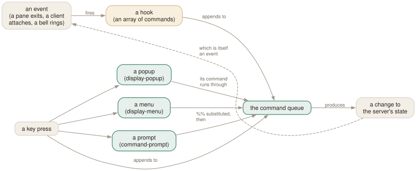

Day 13
Hooks, popups and menus
Making tmux react on its own, and building interfaces of your own.
By the end of today you can
- run commands automatically when tmux does something, with the right scope
- put a shell, a picker or a note in a popup over your work, and dismiss it
- build menus and prompts so a multi-step operation becomes one key
tmux reacting on its own
A hook is a command that runs when something happens, with no key pressed. Nearly every tmux command has an after- hook, and there are a few dozen more named after events — a client attaching, a pane dying, a bell ringing, a layout changing.

$ tmux set-hook -g after-split-window 'select-layout -E'
$ tmux show-hooks -g | head
$ tmux set-hook -ug after-split-window # remove it again
Hooks are stored as array options, which is both a feature and a trap. set-hook -g name[1] '…' adds a second command to the same event; set-hook -g name '…' without an index clears the array and sets element zero. Two things configuring the same hook the careless way will silently overwrite each other.
Hooks have scope, like options: global with -g, or attached to a session, window or pane. And inside a hook you get variables about what triggered it — #{hook}, #{hook_pane}, #{hook_session_name}, #{hook_window}.
A few that earn their place:
# say why a pane died (with remain-on-exit failed, the pane is still there)
set-hook -g pane-died 'display-message "pane #{pane_index}: exit #{pane_dead_status}"'
# never silently swallow a broken binding again
set-hook -g command-error 'display-message -d 0 "command failed"'
# always spread panes evenly after a split
set-hook -g after-split-window 'select-layout -E'
# light and dark terminal themes, if your terminal reports them
set-hook -g client-light-theme 'source-file ~/.tmux/light.conf'
set-hook -g client-dark-theme 'source-file ~/.tmux/dark.conf'
Popups
display-popup runs a command in a box drawn over the panes. It takes no space from the layout, it belongs to the client rather than a window, and with -E it closes itself when the command exits.
$ tmux display-popup -E -w 80% -h 70% -d '#{pane_current_path}' # a scratch shell
$ tmux display-popup -E -w 60% -h 60% -T ' git log ' 'git log --oneline | less'
$ tmux display-popup -E -w 50% -h 40% 'man tmux'
Position and size take percentages or cells, plus the special values C (centre), M (mouse), P (the pane), W (the window's spot on the status line). -T sets a title, -b rounded picks the border style, -B removes it entirely.
The pattern that changes how people work is the picker: run something interactive in the popup and have it act on tmux when you choose. Today's C-bC-j does that with fzf:
bind C-j display-popup -E -w 60% -h 50% \
"tmux ls -F '#{session_name}' | fzf --reverse | xargs -r tmux switch-client -t"
The same shape gives you a fuzzy window switcher, a project opener that runs your bootstrap script from Day 11, a git branch chooser, or a paste-buffer picker. It is the most reusable four lines in this course.
Menus
display-menu takes triples: a name, a shortcut key, and a command. An empty name is a separator; a name starting with - is shown greyed out and cannot be chosen. Because the names are formats, a menu can disable its own entries depending on state — which is exactly what the built-in C-b> menu does with “Unzoom” and “Swap Marked”.
bind C-s display-menu -T "#[align=centre]#{session_name}" -x C -y C \
"New session" n "command-prompt -p name: { new-session -d -s '%%' }" \
"Rename" r "command-prompt -I '#S' { rename-session '%%' }" \
"" \
"Detach" d "detach-client" \
"Kill session" X "confirm-before -p 'kill #S? (y/n)' kill-session"
Menus are worth building for operations you do rarely enough that you forget the key but often enough to want them. They are also the friendly face of a dangerous command: put confirm-before behind the destructive entries and the menu becomes safer than the raw binding.
Prompts and confirmations
command-prompt asks for input on the status line and substitutes it into a command. %% is the first answer; with -p a,b,c you get three prompts and %1, %2, %3.
bind C-n command-prompt -p "new session:" \
"new-session -d -s '%%' -c '#{pane_current_path}' ; switch-client -t '%%'"
# pre-fill with the current name, so renaming is an edit rather than a retype
bind , command-prompt -I "#W" "rename-window -- '%%'"
Useful flags: -I pre-fills the input, -1 accepts a single key press, -N accepts only digits, -i re-runs the command on every keystroke (that is how incremental search in copy mode works), and -T tells tmux what kind of completion to offer when you press Tab — command, target, window-target or search.
confirm-before -p 'prompt' command is the small sibling: it is what stands between C-b& and an accidentally destroyed window. Wrap your own destructive bindings in it.
Where this leaves you
With hooks, popups, menus and prompts you have everything the popular tmux plugins are built out of. A session manager is a popup plus switch-client. A “resurrect” plugin is capture-pane, #{window_layout} and a script. A theme is a handful of style options. That is worth knowing before you install four thousand lines of someone else's shell to get a feature you could write in six.
New vocabulary
Keys
| Key | Does |
|---|---|
| C-bC-g | Scratch shell in a popup (today's binding). |
| C-bC-j | Fuzzy session switcher in a popup (today's binding). |
| C-bC-n | Prompt for a name and create a session (today's binding). |
| C-bC-s | Your own session menu (today's binding). |
Commands
| Command | Does |
|---|---|
set-hook -g name 'cmd' | Run a command when something happens. |
set-hook -g name[1] 'cmd' | Hooks are arrays; index them to keep several. |
set-hook -u -g name | Remove a hook. |
set-hook -R name | Fire a hook right now, by hand. |
show-hooks -g | List the hooks that are set. |
display-popup -E 'cmd' | Run a command in a box over the panes; -E closes it on exit. Alias popup. |
display-menu -T title n k cmd | Show a menu of name/key/command triples. Alias menu. |
command-prompt -p 'name:' 'cmd %%' | Ask for input; %% is the answer. |
command-prompt -I '#S' 'cmd %%' | Pre-fill the prompt with something. |
confirm-before -p 'sure? (y/n)' cmd | Ask before doing something irreversible. |
display-message -d 0 'text' | A message that stays until a key is pressed. |
Options
| Option | Does |
|---|---|
popup-style | Style for the popup's interior; popup-border-style for its edge. |
popup-border-lines | single, rounded, double, heavy, simple, padded, none. |
menu-style | Style for menus; menu-selected-style for the highlighted item. |
Today's configappend to ~/.tmux.conf
A scratch shell floating over the work, in the same directory, gone when you exit it. Replaces the reflex of splitting a pane for one command and then closing it again.
bind -N "Scratch shell in a popup" C-g \
display-popup -E -w 80% -h 70% -d "#{pane_current_path}"
Fuzzy session switching, if you have fzf. This is the single binding most likely to replace an existing habit: it beats C-b s once you have more than four sessions.
bind -N "Switch session (fzf)" C-j \
display-popup -E -w 60% -h 50% \
"tmux ls -F '#{session_name}' | fzf --reverse | xargs -r tmux switch-client -t"
Create a named session without leaving the keyboard. %% is the answer to the prompt.
bind -N "New named session" C-n \
command-prompt -p "new session:" \
"new-session -d -s '%%' -c '#{pane_current_path}' ; switch-client -t '%%'"
A menu of your own. Each entry is a name, a shortcut key and a command; an empty name is a separator, and a name beginning with '-' is greyed out.
bind -N "Session menu" C-s \
display-menu -T "#[align=centre]#{session_name}" -x C -y C \
"New session" n "command-prompt -p name: { new-session -d -s '%%' ; switch-client -t '%%' }" \
"Rename" r "command-prompt -I '#S' { rename-session '%%' }" \
"" \
"Detach" d "detach-client" \
"Kill session" X "confirm-before -p 'kill #S? (y/n)' kill-session"
Say something when a pane's command dies badly. Pairs with remain-on-exit failed from Day 11: the pane stays, and this tells you why.
set-hook -g pane-died 'display-message "pane #{pane_index}: exited #{pane_dead_status}"'
Reload with tmux source-file ~/.tmux.conf and watch for errors in the status line.
Drillsdo these in a real terminal, today
Self-check
Answer out loud first, then unfold.
Why are hooks stored as arrays?
So that several things can hang off one event without overwriting each other. set-hook -g after-split-window[0] … and …[1] … both run, in order. Setting a hook without an index clears the array and sets element zero — which is exactly the trap: two plugins that each “set” the same hook will silently clobber one another.
What is the difference between a popup and a pane?
A popup is not part of any window's layout — it is drawn over the top of whatever is there and takes no space from it, and it belongs to a client rather than to a window. That makes it right for things that are transient: a picker, a quick lookup, a scratch shell. A pane is durable, survives detaching, and can be broken out and moved. If you want the thing to still be there tomorrow, it should be a pane.
In command-prompt -p 'name:' "new-session -d -s '%%'", what is %% and why is it quoted?
%% is replaced by the user's answer before the command is executed (%1 … %9 for multiple prompts). It is quoted because the answer is arbitrary text — a space in it would otherwise split into two arguments. %%% is the variant that also escapes quotation marks, for when the answer is going somewhere that will be parsed again.
You set after-select-pane to run something, and tmux appears to hang or loop. What is the likely cause?
A hook whose command triggers the same hook. tmux does guard the obvious case — a command's after- hook does not fire when that command is run from a hook — but you can still build cycles through two hooks that trigger each other, or pick an event that fires far more often than you assumed. Prefer specific events (pane-exited, session-created) over the very chatty ones, and keep hook commands cheap: they run on tmux's command queue, so a slow run-shell without -b blocks everything behind it.
Cheat sheet
set-hook -g EVENT 'cmd' # hooks are ARRAYS: use [1], [2] to keep several
set-hook -ug EVENT # remove show-hooks -g # list
after-<any command> pane-died pane-exited session-created
client-attached client-detached alert-bell window-layout-changed
command-error client-light-theme / -dark-theme
inside a hook: #{hook} #{hook_pane} #{hook_session_name} #{hook_window}
display-popup -E -w 60% -h 50% -d DIR -T ' title ' 'cmd'
-x/-y: C centre M mouse P pane W window in the status line
display-menu -T title "Name" key "cmd" … ('' = separator, '-…' = disabled)
command-prompt -p 'a:,b:' "cmd '%1' '%2'" -I prefill -1 one key -N digits
confirm-before -p 'sure? (y/n)' cmd
Everything through Day 13
Keys
| Key | Does |
|---|---|
| C-bd | Detach this client. The session keeps running. |
| C-b$ | Rename the current session. |
| C-b? | List every key binding. q to leave. |
| C-b: | Open the tmux command prompt. |
| C-bt | Show a clock — a harmless way to prove the prefix works. |
| C-bC-b | Send a literal C-b to the program in the pane. |
| C-bc | Create a window at the lowest free index. |
| C-b, | Rename the current window — and pin the name. |
| C-bn | Next window by index. |
| C-bp | Previous window by index. |
| C-bl | Back to the last window you were in. The one to actually learn. |
| C-b0 | Jump straight to window 0 (likewise 1 … 9). |
| C-b' | Prompt for a window index — for windows above 9. |
| C-bw | Choose a window from an interactive tree with previews. |
| C-b& | Kill the current window, after a confirmation. |
| C-b. | Move the current window to a different index. |
| C-bi | Flash some information about the current window. |
| C-b% | Split left/right. The |-shaped key gives you a |-shaped border. |
| C-b" | Split top/bottom. |
| C-bLeft | Move to the pane to the left (likewise Right, Up, Down). |
| C-bo | Next pane in creation order. |
| C-b; | The previously active pane — the C-bl of panes. |
| C-bq | Flash the pane numbers; press a digit while they show to jump there. |
| C-bz | Zoom: this pane fills the window. Press again to restore. |
| C-bx | Kill this pane, after a confirmation. |
| C-bSpace | Cycle to the next preset layout. |
| C-bM-1 | even-horizontal — side by side in a row. |
| C-bM-2 | even-vertical — stacked in a column. |
| C-bM-3 | main-horizontal — one big pane on top. |
| C-bM-4 | main-vertical — one big pane on the left. |
| C-bM-5 | tiled — a grid. |
| C-bE | Spread the current pane and its neighbours out evenly. |
| C-bC-Left | Resize by one cell (hold to repeat). M-Left does five. |
| C-b{ | Swap this pane with the previous one; C-b} with the next. |
| C-bC-o | Rotate every pane through the layout; C-bM-o rotates back. |
| C-b* | Open a floating pane over the window — hovers above the layout. |
| C-b[ | Enter copy mode at the bottom of the history. |
| C-bPageUp | Enter copy mode already scrolled one page up. |
| C-b] | Paste the most recent buffer into this pane. |
| C-b= | Choose which buffer to paste, from a list with previews. |
| C-b# | List the paste buffers. |
| C-b- | Delete the most recent buffer. |
| q | In copy mode: leave. (Escape in emacs mode.) |
| /? | vi mode: search forward / backward; n and N repeat. |
| C-sC-r | emacs mode: incremental search forward / backward. |
| Space | vi mode: start a selection. C-Space in emacs mode. |
| v | vi mode: toggle rectangle (block) selection. R in emacs mode. |
| Enter | vi mode: copy the selection and leave. M-w in emacs mode. |
| gG | vi mode: top / bottom of the history. |
| C-bC | Customize mode: browse and change every option and key, with descriptions. |
| C-bR | Reload ~/.tmux.conf — after you add today's binding. |
| C-bs | Choose a session from the tree — with previews, tagging and filtering. |
| C-b( | Switch this client to the previous session. |
| C-b) | Switch this client to the next session. |
| C-bL | Switch back to the last session. The C-bl of sessions. |
| C-bD | Choose a client from a list and detach it. |
| C-b$ | Rename the current session. |
| C-b/ | Describe a key: press it and tmux tells you what it is bound to. |
| C-b? | List every binding in every table — really list-keys -N. |
| C-bM-n | Go to the next window with an alert. |
| C-bM-p | Go to the previous window with an alert. |
| C-bt | The clock — which is really clock-mode, styled by clock-mode-colour. |
| C-bm | Mark this pane. Marked panes are addressable as '~' or {marked}. |
| C-bM | Clear the mark. |
| C-b! | Break this pane out into a window of its own. |
| C-b< | The window menu — swap, kill, rename, new. Try it once. |
| C-b> | The pane menu — split, swap, mark, kill, respawn. |
| C-bf | Search every window for text, by name, title or visible content. |
| C-b@ | Join the marked pane into this window (today's binding). |
| C-bC-g | Scratch shell in a popup (today's binding). |
| C-bC-j | Fuzzy session switcher in a popup (today's binding). |
| C-bC-n | Prompt for a name and create a session (today's binding). |
| C-bC-s | Your own session menu (today's binding). |
Commands
| Command | Does |
|---|---|
tmux | Start the server if needed and create a session, attached. |
tmux new -s work | Create a session named work. |
tmux new -A -s work | Attach to work, creating it only if absent. |
tmux ls | List sessions on this server. Alias for list-sessions. |
tmux attach -t work | Attach this terminal to work. |
tmux attach -d -t work | Attach, detaching any other client first. |
tmux detach | Detach the current client, from inside or by target. |
tmux rename-session api | Rename the current session. |
tmux kill-session -t work | Destroy a session and everything in it. |
tmux kill-server | Destroy every session. The nuclear option. |
new-window | Create a window. Alias neww. |
new-window -n logs | Create it with a fixed name. |
new-window -c ~/src/api | Create it with that working directory. |
new-window -d | Create it but do not switch to it. |
new-window -a -t 2 | Insert after window 2, shifting the rest along. |
rename-window api | Rename the current window. |
select-window -t :3 | Switch to window 3 of the current session. |
last-window | Switch to the previously current window. |
kill-window -t :logs | Kill a window by name. |
list-windows | List windows in the session. Alias lsw. |
choose-tree -w | The interactive picker behind C-bw. |
split-window -h | Split left/right. Alias splitw. |
split-window -v | Split top/bottom. The default if neither is given. |
split-window -c ~/src | Start the new pane in that directory. |
split-window -l 30% | Give the new pane 30% of the space (-l 20 for cells). |
split-window -b | Put the new pane before — above or to the left of — the old one. |
split-window -f -h | Split the full window height, not just the current pane. |
select-pane -L | Move to the pane on the left (-R -U -D likewise). |
select-pane -t 2 | Move to pane 2 of this window. |
last-pane | Back to the previously active pane. |
resize-pane -Z | Toggle zoom. |
resize-pane -x 100 -y 30 | Resize to an absolute size, cells or %. |
select-layout tiled | Apply a named layout. |
select-layout -E | Spread evenly (what C-bE runs). |
select-layout -o | Undo the most recent layout change. |
list-panes | List panes with index, size and command. Alias lsp. |
kill-pane -a | Kill every pane except this one. |
swap-pane -D | Swap with the next pane, keeping focus behaviour sane. |
copy-mode | Enter copy mode; -u starts a page up, -e exits at the bottom. |
send-keys -X begin-selection | How every copy-mode key is implemented. -X means “to the mode”. |
list-buffers | Show the buffer stack. Alias lsb. |
set-buffer "text" | Put a literal string into a buffer from a script. |
load-buffer file | Read a file into a buffer (- for stdin). |
save-buffer file | Write a buffer out to a file (- for stdout). |
show-buffer | Print the newest buffer. |
paste-buffer -t :1.0 | Paste into a specific pane, not necessarily this one. |
delete-buffer -b name | Remove one buffer. |
capture-pane -p -S -3000 | Dump the last 3000 lines of history to stdout. |
clear-history | Throw away a pane's scrollback. Alias clearhist. |
set-option -g name value | Set a global session option. Alias set. |
set-option -w name value | Set a window option (for the current window). |
set-option -p name value | Set a pane option (for the current pane). |
set-option -s name value | Set a server option. |
set-option -u name | Unset, so the value is inherited again. |
set-option -a name value | Append to a string or style option instead of replacing it. |
show-options -g | Show global session options. Alias show. |
show-options -A | Show them including inherited values, marked with *. |
show-options -gv history-limit | Print just the value of one option. |
source-file ~/.tmux.conf | Run a file of tmux commands now. Alias source. |
customize-mode | The interactive option browser behind C-bC. |
new-session -d -s api | Create a session in the background and stay where you are. |
new-session -A -s api | Attach if it exists, create if it does not. |
new-session -c ~/src/api -s api | Create with a starting directory. |
switch-client -t api | Move this client to another session, without detaching. |
switch-client -l | Back to the previous session. |
has-session -t api | Exit 0 if it exists. The if in every wrapper script. |
attach-session -d -t api | Attach here and detach whoever else was looking. |
list-clients | Which terminals are attached to what. Alias lsc. |
detach-client -s api | Detach every client from that session. |
kill-session -a | Kill every session except the current one. |
choose-tree -Zs | The session picker behind C-bs. |
tmux neww \; splitw -h | Two commands in one invocation. Note the escaped semicolon. |
display-message -p '#{pane_id}' | Print a value to stdout instead of the status line. |
list-panes -a | Every pane on the server, not just this window. |
list-windows -a | Every window on the server. |
list-sessions -F '#{session_name}' | One field per line — the shape scripts want. |
list-commands | Every command tmux knows, with its synopsis. Alias lscm. |
list-commands neww | The synopsis for one command. |
bind-key c new-window | Bind in the prefix table. Alias bind. |
bind-key -n M-Left select-pane -L | Bind without a prefix (-n = -T root). |
bind-key -r H resize-pane -L | Repeatable: keep tapping without re-pressing the prefix. |
bind-key -N "note" x cmd | Attach a note, shown by C-b?. |
bind-key -T mytable g cmd | Bind in a table of your own. |
unbind-key -T prefix x | Remove a binding. Alias unbind. |
list-keys -T copy-mode-vi | Read a whole mode as data. Alias lsk. |
list-keys -N | Only keys with notes, in a readable form. |
send-keys -X copy-selection | Send a command into a mode. |
send-prefix | Pass the prefix key through to the program. |
switch-client -T mytable | Make the next key be looked up in another table. |
display-message -p '#{…}' | Evaluate a format and print it. The echo of tmux. |
display-message -a | List every format variable with its current value. |
display-message -v '#{…}' | Show how the format is parsed, step by step. |
list-panes -f '#{…}' | Filter a listing by a format that evaluates true. |
if-shell -F '#{…}' cmd | Run a command when a format is non-empty and non-zero. |
set-option -F name '#{…}' | Expand the format now and store the result. |
refresh-client -S | Redraw the status line right now. |
show-options -g status-format | Read the default status line's own definition. |
display-menu -T title name key cmd | Pop up a menu — what the status line's mouse bindings use. |
send-keys -t %7 'make' Enter | Type into a pane from outside. Alias send. |
send-keys -l 'literal $text' | Send characters literally, without key-name lookup. |
send-keys -N 5 Up | Repeat a key five times. |
run-shell 'cmd' | Run a shell command with no window; output shown in view mode. Alias run. |
run-shell -b 'cmd' | Same, in the background, not blocking the command queue. |
if-shell 'test -d .git' 'cmd' 'other' | Branch on a shell command's exit status. |
if-shell -F '#{…}' 'cmd' | Branch on a format, with no shell at all. |
pipe-pane -o 'cat >>log' | Copy everything a pane prints to a command; -o toggles. |
capture-pane -p -S - | A pane's whole history on stdout. |
respawn-pane -k 'cmd' | Restart the command in a pane, killing the old one. |
wait-for -S name | Wake up a client blocked on wait-for name. |
select-pane -m | Mark a pane; -M clears the mark. |
break-pane -d | Pane becomes its own window; -d stays put. Alias breakp. |
join-pane -t :2 | Move a pane into another window. Alias joinp. |
join-pane -h -s %7 -t :1 | Move pane %7 beside the target, splitting left/right. |
move-pane -b -t %3 | The same command under another name, -b to insert before. |
link-window -s api:2 -t infra: | Make one window appear in a second session. |
unlink-window -t infra:3 | Remove it from one session, leaving the others. |
move-window -r | Renumber the windows, closing gaps. |
swap-window -t :1 | Exchange two windows' positions. |
swap-pane -s %3 -t %5 | Exchange two panes. |
find-window -Z text | Search names, titles and visible content. Alias findw. |
choose-tree -Z | The full tree; t tags, : runs a command on every tagged item. |
set-hook -g name 'cmd' | Run a command when something happens. |
set-hook -g name[1] 'cmd' | Hooks are arrays; index them to keep several. |
set-hook -u -g name | Remove a hook. |
set-hook -R name | Fire a hook right now, by hand. |
show-hooks -g | List the hooks that are set. |
display-popup -E 'cmd' | Run a command in a box over the panes; -E closes it on exit. Alias popup. |
display-menu -T title n k cmd | Show a menu of name/key/command triples. Alias menu. |
command-prompt -p 'name:' 'cmd %%' | Ask for input; %% is the answer. |
command-prompt -I '#S' 'cmd %%' | Pre-fill the prompt with something. |
confirm-before -p 'sure? (y/n)' cmd | Ask before doing something irreversible. |
display-message -d 0 'text' | A message that stays until a key is pressed. |
Options
| Option | Does |
|---|---|
automatic-rename | Window renames itself after the running command. On by default. |
automatic-rename-format | The format used when it does. Defaults to the pane's command. |
allow-rename | Whether a program in the pane may rename the window by escape sequence. |
main-pane-width | Width of the big pane in the main-vertical layouts. Accepts %. |
main-pane-height | Height of the big pane in the main-horizontal layouts. |
tiled-layout-max-columns | Cap the columns in the tiled layout; 0 means no cap. |
mode-keys | vi or emacs key bindings inside copy mode. Default emacs. |
history-limit | Lines of scrollback kept per pane. Default 2000, which is stingy. |
copy-command | Shell command that bare copy-pipe pipes to — your clipboard tool. |
set-clipboard | Whether tmux sets the terminal's clipboard with OSC 52. |
word-separators | What counts as a word boundary for w and b. |
wrap-search | Whether searches wrap around the end of the history. On by default. |
base-index | Index the first window gets. Default 0. |
pane-base-index | Index the first pane gets. Default 0. A window option. |
renumber-windows | Close the gaps in window indices when one is killed. |
escape-time | Milliseconds tmux waits to decide whether Escape began a key sequence. |
focus-events | Pass terminal focus in/out through to the programs in panes. |
display-time | How long status line messages stay up. 750 ms by default. |
default-terminal | The $TERM new panes get. Must be a screen/tmux derivative. |
detach-on-destroy | What a client does when its session dies. off moves it to another session instead. |
destroy-unattached | Destroy a session once the last client leaves. Off by default, and rightly. |
default-size | Size for sessions created detached, when no client dictates one. |
window-size | Whether a window sizes to the largest, smallest or latest attached client. |
aggressive-resize | Size each window to the clients actually viewing it, not the whole session. |
command-alias | Server option: an array of your own command aliases. |
prefix | The prefix key. None disables it entirely. |
prefix2 | A second prefix key, for when you want both C-b and C-a. |
repeat-time | Milliseconds the prefix stays live after a -r key. Default 500. |
initial-repeat-time | The same, for the first press of a repeat sequence. |
key-table | Which table a client starts in. The lever behind modal setups. |
pane-border-format | What is drawn on a pane's border line. |
pane-border-status | Where that line goes: off, top, bottom. |
automatic-rename-format | The format used to rename windows automatically. |
status | off, on, or 2–5 for a taller status line. |
status-position | top or bottom. |
status-style | The base style for the whole line. |
status-left | The left segment. A format. Truncated to 10 columns by default. |
status-left-length | How wide the left segment may be. Raise it before anything else. |
status-right | The right segment. Also a format, also length-limited (40). |
status-justify | Where the window list sits: left, centre, right, absolute-centre. |
status-interval | Seconds between redraws. 15 by default; matters if you use #(). |
window-status-format | How each window is drawn in the list. |
window-status-current-format | How the current one is drawn. |
window-status-separator | What goes between them. A space by default. |
window-status-style | Style for a window entry; -current-, -activity-, -bell-, -last- variants exist. |
monitor-activity | Flag windows where output appeared while you were away. |
monitor-bell | Flag windows that rang the terminal bell. |
monitor-silence | Flag windows that have been quiet for N seconds. |
visual-activity | Show a message instead of (or as well as) ringing the bell. |
activity-action | any / none / current / other — which windows count. |
remain-on-exit | Keep a pane open after its command exits: on, off, failed, key. |
remain-on-exit-format | The text shown at the bottom of a pane that has exited. |
default-command | What a new pane runs when nothing is specified. |
mouse | Master switch. Off by default; turned on back on Day 5. |
focus-follows-mouse | Moving the mouse into a pane selects it. Off by default. |
pane-scrollbars | off, modal (only in copy mode), or on. |
pane-scrollbars-position | left or right. |
pane-border-indicators | How the active pane's border is marked: colour, arrows, both, off. |
popup-style | Style for the popup's interior; popup-border-style for its edge. |
popup-border-lines | single, rounded, double, heavy, simple, padded, none. |
menu-style | Style for menus; menu-selected-style for the highlighted item. |